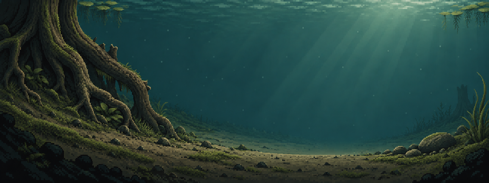

NATURAL POND SERIES / M02 · SELECTED A / ROUND 02
根缝附藻，阴岸成丛。
沿用你选中的左侧老树阴岸。苔藻依附粗根，宽叶水草与矮草聚在根脚，中央保留连续裸沙通道与开阔水域。

同构图前后比较


2048×768 静态美术图，不是游戏截图。植物仍烘焙在图片内，没有新增交互或碰撞；左下阴影在正式接入时还需裁让巢穴/出生区。本轮不包含动物。
沿用你选中的左侧老树阴岸。苔藻依附粗根，宽叶水草与矮草聚在根脚，中央保留连续裸沙通道与开阔水域。

2048×768 静态美术图，不是游戏截图。植物仍烘焙在图片内，没有新增交互或碰撞；左下阴影在正式接入时还需裁让巢穴/出生区。本轮不包含动物。